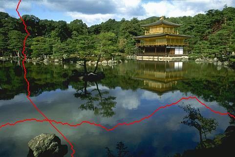

Dynamic Programming#
Dynamic programming is a powerful technique for solving problems by breaking them down into smaller, overlapping subproblems. It’s widely used in various fields, including computer science, optimization, and image processing. One intriguing application of dynamic programming is seam carving. Seam carving is used in content-aware image resizing, in which, its algorithm is very similar to Viterbi algorithm.
Content-Aware Image Resizing#
Content-aware image resizing aims to change the width or height of an image while preserving its essential features. Traditional methods like cropping and scaling have limitations, often resulting in loss of important content or visible artifacts. Seam carving offers an elegant solution by identifying and removing low-energy seams from the image.
What Are Seams?#
In the context of seam carving, a seam is a connected path of pixels that spans the entire height or width of the image. The goal is to find the lowest-energy seam (i.e., the least interesting part of the image) and remove it. Seam carving ensures that the removed seam doesn’t disrupt the overall visual coherence.
Seam Carving Process#
Energy Calculation: First, we compute the energy of each pixel in the image. Energy represents the importance of a pixel based on its color gradients. Higher energy corresponds to more visually significant regions.
Dynamic Programming: Seam carving uses dynamic programming to find the optimal seam. For vertical resizing (reducing width), we find the seam with the minimum cumulative energy from top to bottom. The seam moves left or right by at most one pixel in each row.
Seam Removal: Once we identify the lowest-energy seam, we remove it by shifting the remaining pixels to close the gap. This process is repeated until the desired image width is achieved.
Example#
Consider the following image; Seam carving identifies the lowest-energy seam, which typically runs through less interesting areas. By removing this seam, we resize the image without sacrificing essential details.

Dynamic Programming#
Dynamic programming plays a crucial role in both seam carving and the Viterbi algorithm. While seam carving focuses on image resizing, the Viterbi algorithm is widely used for decoding hidden Markov models (HMMs). Let’s explore their similarities and differences.
Seam Carving Algorithm#
Energy Calculation:
Compute the energy of each pixel in the image.
Define an energy matrix where each entry represents the cumulative energy from the top-left corner to that pixel.
Dynamic Programming Table:
Create a dynamic programming table (similar to the Viterbi trellis).
Initialize the first row of the table with the energy values from the energy matrix.
Optimal Seam Identification:
For each subsequent row, compute the cumulative energy by considering the neighboring pixels (left, above-left, and above-right).
Update the dynamic programming table with the minimum cumulative energy path.
The optimal seam corresponds to the path with the lowest cumulative energy in the last row.
Seam Removal:
Remove the pixels along the identified seam.
Shift the remaining pixels to close the gap.
Repeat until the desired image width is achieved.
Seam carving and the Viterbi algorithm exemplify the versatility of dynamic programming. Whether we’re resizing images or decoding hidden states, dynamic programming provides elegant solutions.
Seam carving minimizes energy, while the Viterbi algorithm maximizes probabilities.
Both algorithms find an optimal path based on dynamic programming principles.
Seam-carving implementation#
My first implementation of seam-carving was in MATLAB, then by Python. In the following, my new code which is a combination of my previous code and Karthik Karanth’s code is provided.
Show code cell source
"""
This is a combination of Karthik Karanth and my implementation for seam carving
"""
def calc_energy(img):
Ix, Iy = np.gradient(rgb2gray(img))
energy_map = np.abs(Ix) + np.abs(Iy)
return energy_map
def crop_c(img, num_seams):
r, c, _ = img.shape
for i in range(min([num_seams, c])):
img = carve_column(img)
return img
def crop_r(img, num_seams):
img = np.rot90(img, 1, (0, 1))
img = crop_c(img, num_seams)
img = np.rot90(img, 3, (0, 1))
return img
def carve_column(img):
r, c, _ = img.shape
M, backtrack = minimum_seam(img)
mask = np.ones((r, c), dtype=bool)
j = np.argmin(M[-1])
for i in reversed(range(r)):
mask[i, j] = False
j = backtrack[i, j]
mask = np.stack([mask] * 3, axis=2)
img = img[mask].reshape((r, c - 1, 3))
return img
def find_optimal_seam(M, backtrack):
r, c = M.shape
# Find the column index with the minimum energy in the last row
j = np.argmin(M[-1])
# Initialize an empty list to store the seam indices
seam = []
# Backtrack from the last row to the first row
for i in reversed(range(r)):
seam.append((i, j))
j = backtrack[i, j]
# Reverse the seam to get the correct order
seam.reverse()
return seam
# usage:
# seam_indices = find_optimal_seam(M, backtrack)
# Now seam_indices contains the optimal path as a list of (i, j) indices
def minimum_seam(img):
r, c, _ = img.shape
energy_map = calc_energy(img)
M = energy_map.copy()
backtrack = np.zeros_like(M, dtype=np.int32)
for i in range(1, r):
for j in range(0, c):
left_most_col = max(0, j - 1)
idx = np.argmin(M[i - 1, left_most_col : j + 2])
backtrack[i, j] = left_most_col + idx
min_energy = M[i - 1, left_most_col + idx]
M[i, j] += min_energy
return M, backtrack
Usage of the above functions for vertical or horizontal seam-carving
Show code cell source
# which_axis = "c"
# num_seams = 100
# in_filename = "img/two-butterfly.jpg"
# img = imread(in_filename)
# if which_axis == "r":
# out = crop_r(img, num_seams)
# elif which_axis == "c":
# out = crop_c(img, num_seams)
# plt.figure(figsize=(10, 5))
# plt.subplot(1, 3, 1)
# plt.axis("off")
# plt.imshow(img)
# plt.subplot(1, 3, 2)
# plt.axis("off")
# plt.imshow(calc_energy(img))
# plt.subplot(1, 3, 3)
# plt.axis("off")
# plt.imshow(out.astype(np.int16))
Make the image smaller in length: 540x540 -> 400x540
in_filename = "img/MistakeFreeTomorrow.jpg"
img = imread(in_filename)
out = crop_r(img, 140)
Show code cell source
if not interactive:
plt.figure(figsize=(10, 5))
plt.subplot(1, 2, 1)
plt.axis("off")
plt.imshow(img)
plt.subplot(1, 2, 2)
plt.axis("off")
plt.imshow(out.astype(np.int16))
Make the image smaller: 324x324 -> 240x240
Show the optimum seam as RED
Show code cell source
in_filename = "img/thanks.jpg"
img = imread(in_filename)
out = crop_r(img, 84)
out = crop_c(out, 84)
# The first vertical seam
M, backtrack = minimum_seam(img)
seam_indices = find_optimal_seam(M, backtrack)
im_vs = img.copy()
# Set the pixels corresponding to the seam indices to red
for i, j in seam_indices:
im_vs[i, j] = (255, 0, 0) # Set RGB values to red
# The first horizontal seam
img = np.rot90(img, 1, (0, 1))
M, backtrack = minimum_seam(img)
seam_indices = find_optimal_seam(M, backtrack)
im_hs = img.copy()
# Set the pixels corresponding to the seam indices to red
for i, j in seam_indices:
im_hs[i, j] = (255, 0, 0) # Set RGB values to red
img = np.rot90(img, 3, (0, 1))
im_hs = np.rot90(im_hs, 3, (0, 1))
Show code cell source
if not interactive:
plt.figure(figsize=(10, 5))
plt.subplot(2, 3, 1)
plt.axis("off")
plt.imshow(img)
plt.subplot(2, 3, 2)
plt.axis("off")
plt.imshow(calc_energy(img))
plt.subplot(2, 3, 3)
plt.axis("off")
plt.imshow(im_vs)
plt.subplot(2, 3, 4)
plt.axis("off")
plt.imshow(out)
plt.subplot(2, 3, 5)
plt.axis("off")
plt.imshow(calc_energy(img))
plt.subplot(2, 3, 6)
plt.axis("off")
plt.imshow(im_hs)
def insert_column(img):
r, c, _ = img.shape
M, backtrack = minimum_seam(img)
mask = np.ones((r, c + 1), dtype=bool)
j = np.argmin(M[-1])
for i in reversed(range(r)):
mask[i, j] = False
mask[i, j + 1] = True
j = backtrack[i, j]
new_img = np.zeros((r, c + 1, 3), dtype=img.dtype)
new_img[:, :j] = img[:, :j]
new_img[:, j + 1:] = img[:, j:]
new_img[:, j] = img[:, j]
return new_img
def expand_c(img, num_seams):
r, c, _ = img.shape
for i in range(min([num_seams, c])):
img = insert_column(img)
return img
def expand_r(img, num_seams):
img = np.rot90(img, 1, (0, 1))
img = expand_c(img, num_seams)
img = np.rot90(img, 3, (0, 1))
return img
in_filename = "img/thanks.jpg"
img = imread(in_filename)
# img = rgb2gray(img)
# Zoom in by 50 columns
new_img = expand_c(img, 50)
# # Zoom in by 30 rows
# new_img = expand_r(img, 30)
img.shape
(324, 324, 3)
if not interactive:
plt.figure(figsize=(10, 5))
plt.subplot(2, 3, 1)
plt.axis("off")
plt.imshow(img)
plt.subplot(2, 3, 2)
plt.axis("off")
plt.imshow(new_img)
References:
Speech and Language Processing, by Dan Jurafsky and James H. Martin. Stanford University, 2023.
Shai Avidan and Ariel Shamir. “Seam Carving for Content-Aware Image Resizing.”
Implementing Seam Carving with Python, by Karthik Karanth
Intro to the Seam Carving Algorithm, by Ben Tanen
Intro to the Viterbi Algorithm, by Paul Butler